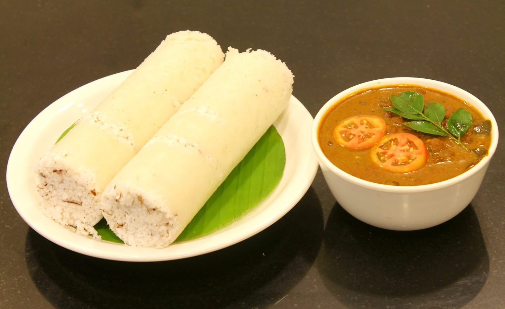
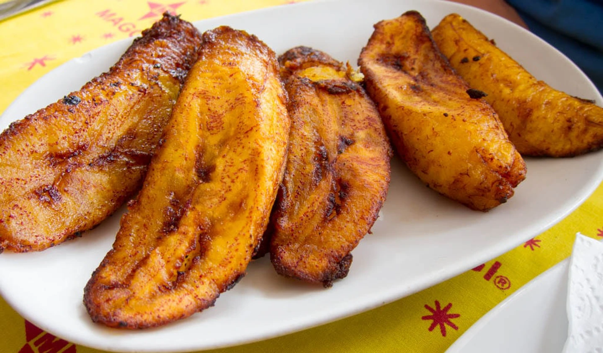
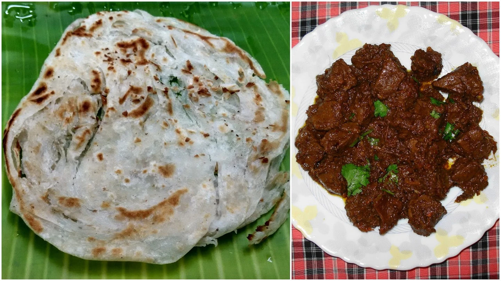
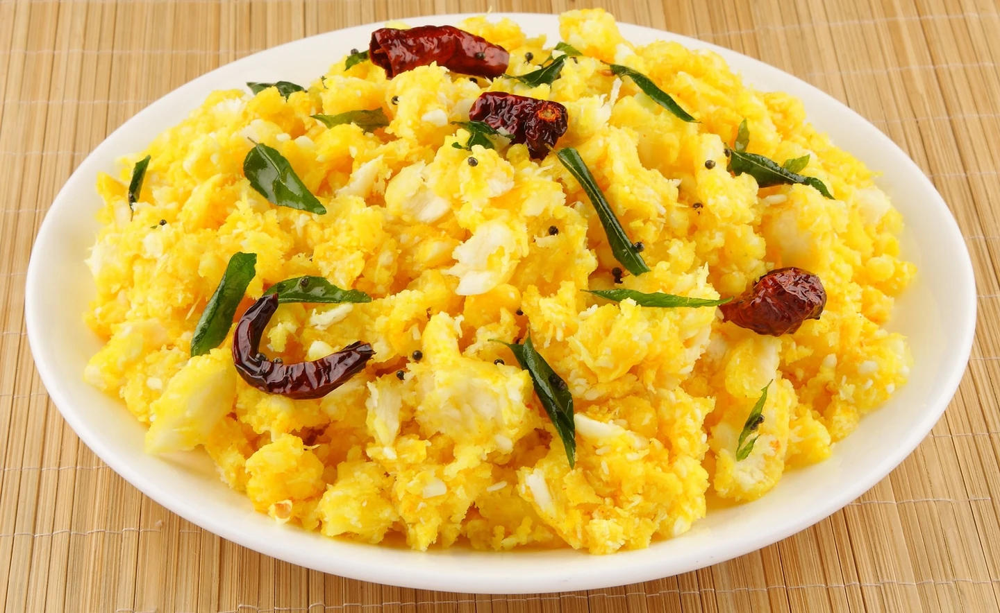

South indian
Nothing beings pepole together like good food.
|  | Puttu and Kadala curryA widely favoured combination, Puttu and Kadala curry is a common vegetarian breakfast savoured in homes and restaurants alike, across Kerala. |
|  | Pazham PoriOne of the all time favourite tea-time snacks all over the state of Kerala, pazham pori literally translates to fried bananas |
|  | Kappa KuzhachathuOnce a staple food of a certain section of Malayalis in Kerala, this is considered to be the food of the humble folk. A simple comfort food, it is made by boiling tapioca, smashing it, and then mixing it with spices |
|  | Kappa KuzhachathuOnce a staple food of a certain section of Malayalis in Kerala, this is considered to be the food of the humble folk. A simple comfort food, it is made by boiling tapioca, smashing it, and then mixing it with spices. |